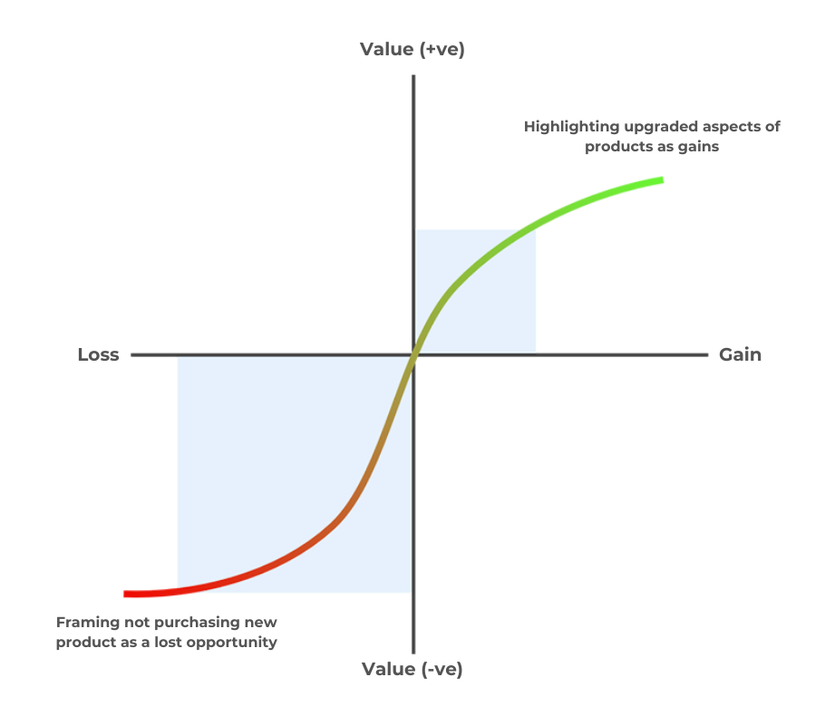
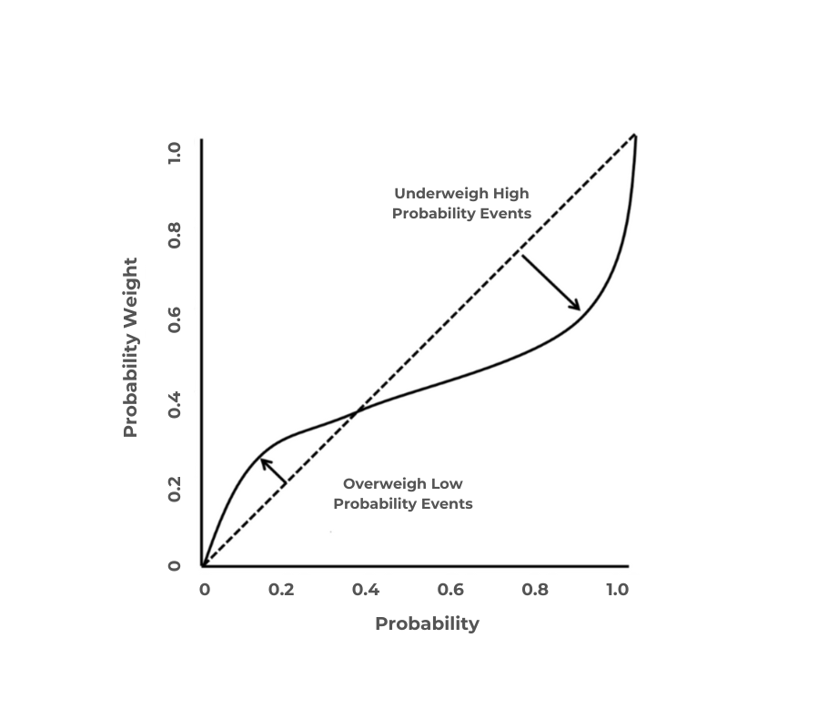

In 1979, Daniel Kahneman and Amos Tversky proposed the Prospect theory to describe how humans make decisions when presented with situations involving probability, risk, and uncertainty. The theory proposes that individuals make decisions based on their perception of an event, and their analysis of the probable gain or loss, which might not always be rational. Thus, an individuals’ reaction to a situation is highly influenced by their view of the situation and their personal risk attitude. The theory also posits the framing effect which states how people reverse their preferences in different frames. While having a risk avoiding attitude when in a positive frame, people switch deliberately to a risk seeking attitude when put in a negative frame in the same situation. This not only violates the invariance axiom of normative theory, but also confirms that people are way more emotional about losses than for gains.
Prospect Theory (PT) comprises of two sequential phases, namely editing phase and evaluation phase. The former focuses on the way people portray their frame of choice. Often referred as framing effects, they describe how a person’s choice can be influenced by the order and presentation (as observed from their perspective) of a scenario. In the latter, or the second phase, potential gains and losses are weighed to assess “utility” in order to select the best (as optimal as possible) outcome. This phase demonstrates how a person’s decision is affected by the possibility and strength of the expected gains or losses in the event. The success of a new launch depends highly on its effective pricing and in order to develop a pricing strategy, PT can be used as a beneficial tool. It can provide us with crucial insights on consumer behaviour that would help us deduce how consumers are likely to analyse the risk and uncertainty involved with the purchase of the new product.
PT states that instead of weighing the outcomes objectively, people evaluate the probable gains and losses with respect to a reference point (Hodgkinson, et al., 1999). In this case, analysis of the new and improved product can be done with the previous one as the reference point. This will help in drawing different qualitative and quantitative comparisons between the product models from customers’ perspective. Framing is an important aspect of PT and can be used to enhance our pricing strategy. This can be achieved by presenting the new product in a way that highlights its technical improvements and upgrades over the previous model. Presenting the new model in terms of gains and mitigating the focus from potentials risks will allow setting a substantially higher price for new model. The decision is based on the view that customers are likely to perceive a product with higher price to be more advanced and valuable (e.g., each newer model of an iPhone is priced higher than the previous one based on few technical upgrades). This can be used to offset the perceived risk of switching to a new product and present the new model as a bargained purchase.

Figure 1: Value Function.
PT states that people are a lot more sensitive to losses than to gains and are highly focused on the aversion of losses. As illustrated in Figure 1, the value function (VF) curve follows a concave curve for gains, but a steeper convex path for losses. Therefore, instead of stressing over the potential risks of the new model, emphasising on the latent losses involved with not using the new model would enhance the pricing strategy (Slovic, et al., 1982). It will bind customers to rethink about missing out on a product with improved features and upgraded performance, with a possibility of cost savings in the long run (e.g., the older model turns obsolete soon, the new model shows high reliability). Limited time discounts and coupons can be made available to increase consumers’ fear of missing out on an advanced product at a discounted price. In short, presenting the latest release as a gain while reducing the perceived losses is crucial.
Extending the concept of loss aversion, endowment effect can be used to enhance our strategy further. The effect demonstrates the tendency of humans to value things more once they get acquainted to it (Kahneman, Knetsch and Thaler, 1990). In this case, free trials can be effective to make customers feel accustomed and attracted to the new features (e.g., display items in electronic stores attract customers to try out and get acquainted with the new technology and motivates them to purchase one) which will influence them to own the new model.

Figure 2: Probability Weighing Function.
Probability weighting function (PWF) demonstrates that people tend to tone down the events of substantial probability, while over stressing on the ones with lower probability (Levy, 1992). Combining the VF and PWF can enhance the pricing strategy developed using PT. The four-fold effect of risk attitudes combines VF and PWF to describe how the human tendency varies in different probabilities of gains and losses. For events with significant (medium to high) probability, people tend to be risk averse for gains and risk seeking for losses, but they tend to be risk seeking for gains and risk avoiding for losses in events of low probability (Scholten and Read, 2014). Therefore, to design a profitable price strategy it is key to emphasise on certainty and risk aversion while promoting gains, so that the new model comes out as a secure and reliable investment. Conversely, highlighting uncertainty and enticing risk-seeking behaviour while addressing potential losses can make the perceived risks more acceptable.
Although prospect theory provides instrumental insights for decision-making, it has significant limitations in practical applications. Kőszegi and Rabin (2007) argue that the subjective reference point depends heavily on expectations and context making it difficult to define. Also, they contend that reference points are influenced by various external factors which creates an ambiguity about what exactly the gain or loss is. This creates a barrier for applying prospect theory with an unclear reference point. Some critics suggest that PT does not capture the actual cognitive processes sufficiently based on which people make choices. For instance, Gigerenzer and Berg (2010) state that PT does not provide a convincing explanation of the structure of decision-making. They even argue that PT requires way more cognitive resources than the classical expected utility theory. Additionally, research by List (2004) states that the effects to framing does not matter much in complex market environments, suggesting that framing might not have much impact on experienced decision makers. Kachelmeier and Shehata (1992) state that they did not find much relevance for PT in China. They suggest that PT may not find much support when stakes are huge in comparison to personal wealth. Therefore, difficulty of defining reference points, over-utilisation of cognitive resources, experienced decision-makers, and large stakes are the key factors that pose resistance to the application of PT in the real world.
To conclude, PT delivers key psychological insights on how people analyse and react to the probable gains and losses in situations involving uncertainty. It provides a conceptual framework to help promote an innovative product as a gain to be captured, rather than a risky transition. However, PT has some limitations in practical pricing strategy. Determining reference points for consumers’ is challenging, and the theoretical probability evaluations might not mirror the real purchase drivers. Moreover, PT evaluates individual perpetual biases and not the holistic market dynamics. Therefore, it is important to balance this theory with an in-depth understanding of diverse consumer behaviours and external influences, to develop a nuanced and effective pricing strategy.
References
- Gigerenzer, G. and Berg, N., 2010. As-If Behavioral Economics : Neoclassical Economics in Disguise?. History of economic ideas, 18(1), pp.133-166.
- Hodgkinson, G.P., Bown, N.J., Maule, A.J., Glaister, K. W. and Pearman, A.D. 1999. Breaking the frame: an analysis of strategic cognition and decision making under uncertainty, Strategic Management Journal, 20(10), pp.977-985.
- Kachelmeier, S. and Shehata, M., 1992. Examining Risk Preferences Under High Monetary Incentives: Experimental Evidence from the People's Republic of China. The American Economic Review, 82(5), pp.1120-1141.
- Kahneman, D., Knetsch, J.L. and Thaler, R.H. 1990. Experimental tests of the endowment effect and the Coase theorem. Journal of political Economy, 98(6), pp.1325-1348.
- Kahneman, D. and Tversky, A. 1979. Prospect Theory: An Analysis of Decision under Risk. Econometrica, 47(2), pp.263-291.
- Kahneman, D. and Tversky, A. 1984. Choices, Values and Frames. American Psychologist, 39, pp.341–350.
- Kőszegi, B. and Rabin, M., 2007. Reference-Dependent Risk Attitudes. American Economic Review, 97(4), pp.1047-1073.
- Levy, J.S., 1992. An introduction to prospect theory. Political psychology, pp.171-186.
- List, J. A., 2004. Neoclassical Theory Versus Prospect Theory: Evidence from the Marketplace. Econometrica, 72(2), pp.615-625.
- Scholten, M. and Read, D., 2014. Prospect theory and the “forgotten” fourfold pattern of risk preferences. Journal of Risk and Uncertainty, 48, pp.67-83.
- Slovic, P., Fischhoff, B. and Lichtenstein, S. 1982. Why study risk perception? Risk analysis, 2(2), pp.83-93.